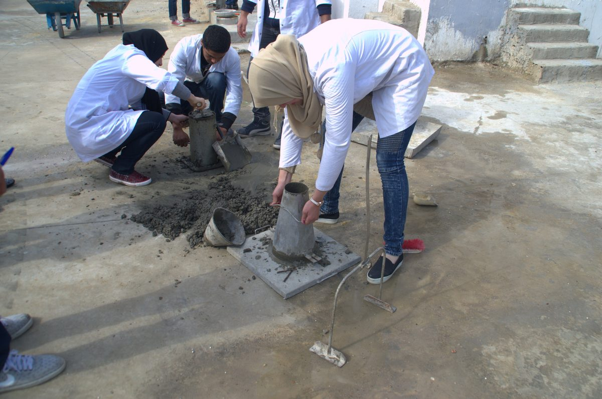
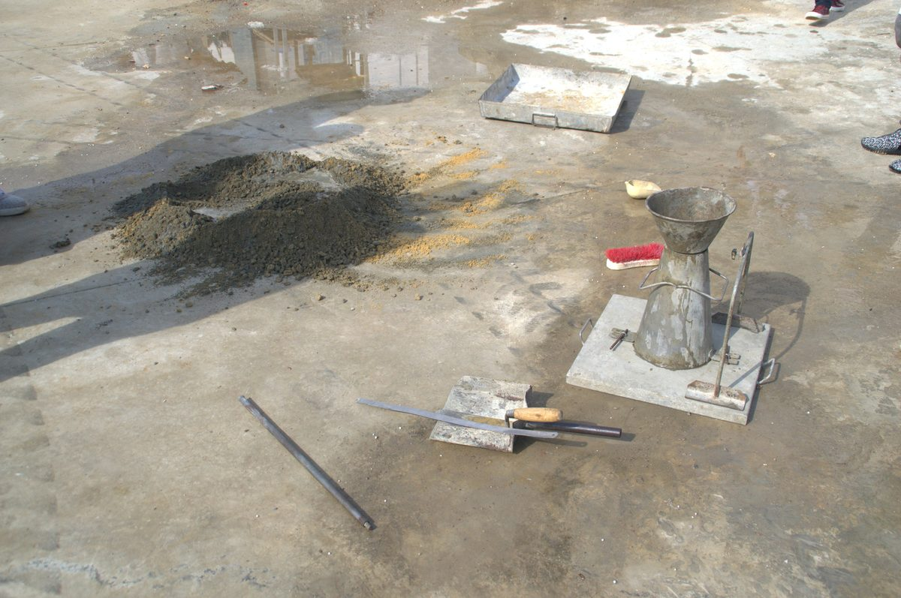
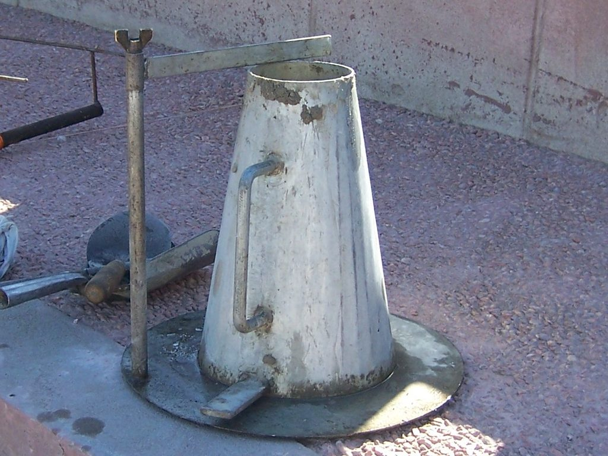
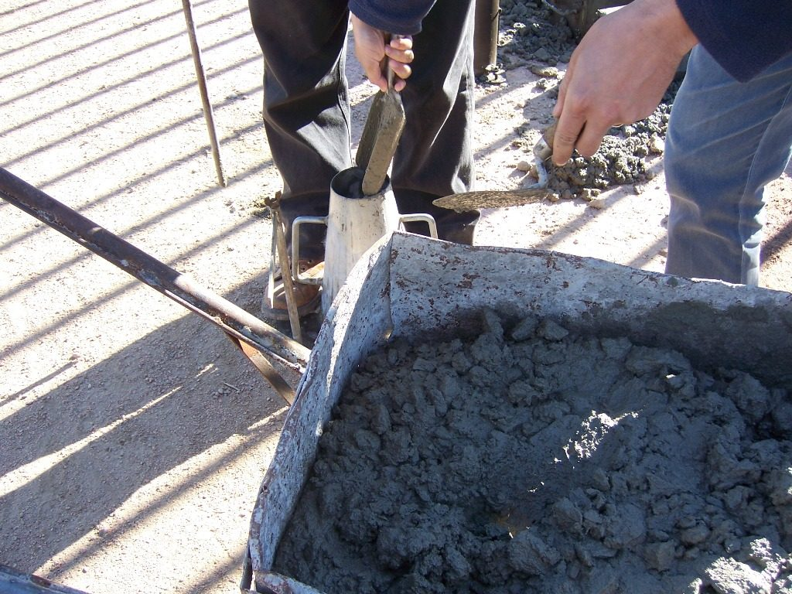
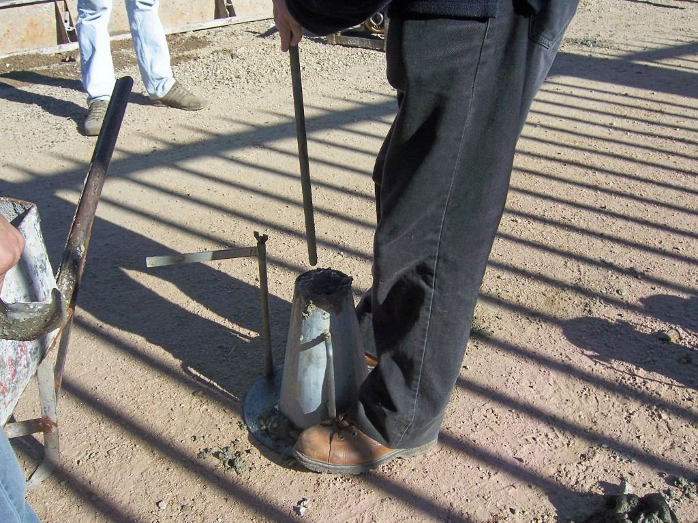
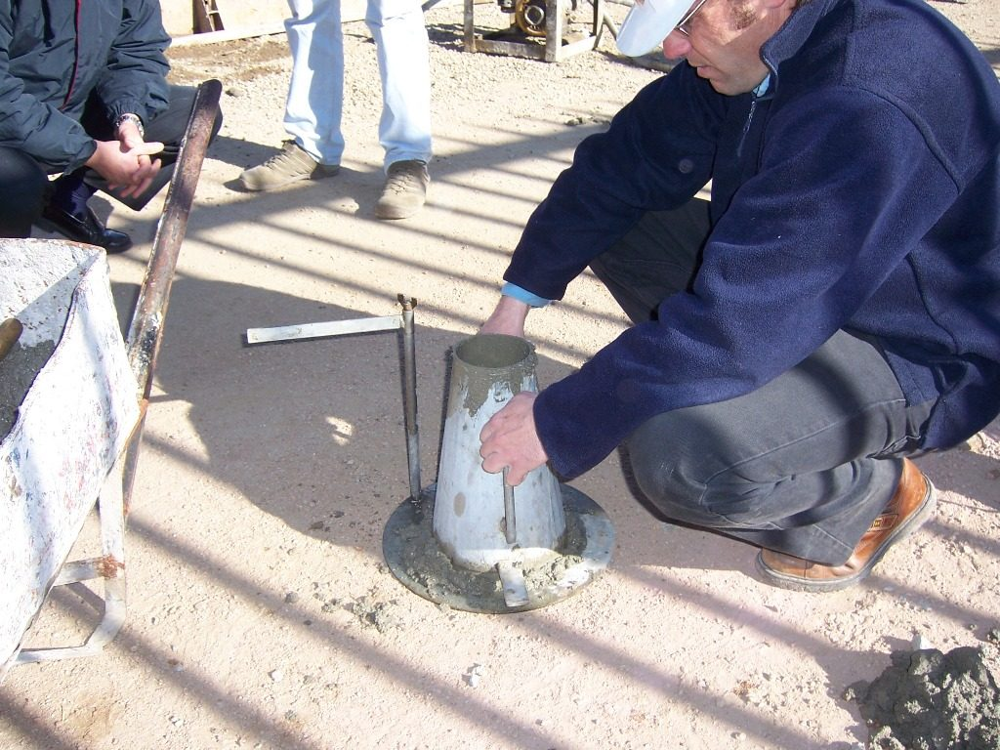
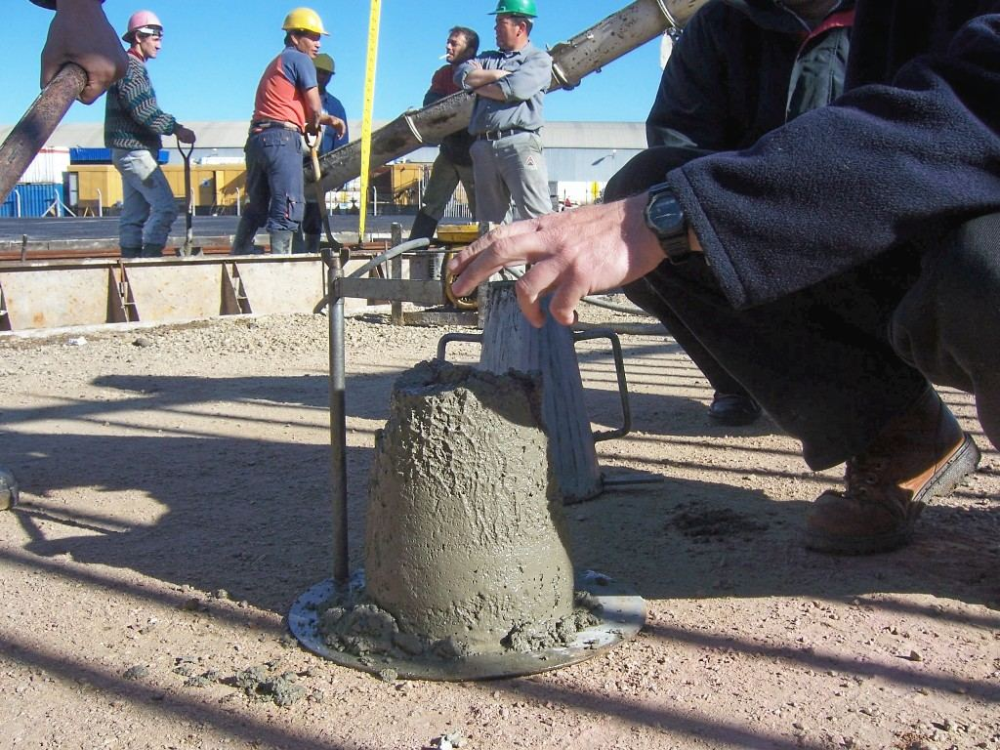

1What slump measures — and what it does not

The slump test is the oldest and simplest check on fresh concrete: fill a standard cone with the mix, lift the cone straight up, and measure how far the concrete settles. ASTM C143/C143M (one standard, in inch-pound and SI units) standardizes every part of that sentence — the cone, the rod, the filling, the lift, and the measurement — so that a reading taken at the plant means the same thing as a reading taken at the forms.
Slump is the vertical distance, in inches (or millimeters), that a cone of fresh concrete settles after the mold is removed. It is an index of consistency — how wet or stiff the batch behaves — measured on a composite sample within minutes of discharge.
Two things the test does not do. First, slump is not the whole of workability. Two mixes can slump the same 4 in. and behave very differently under a vibrator, because aggregate shape, sand content, and admixtures all change how the concrete moves once it is in the form. Second, slump only works in a band. Below about 1/2 in. the concrete is too stiff to settle meaningfully; above about 9 in. it is too fluid to hold a shape, and self-consolidating mixes are measured by slump flow (ASTM C1611) — spread, not drop — instead. Inside that band, the test earns its keep as the fastest way to see whether a delivery matches the mix you designed in Part 1.
The test also assumes coarse aggregate no larger than 1 1/2 in. (37.5 mm) nominal maximum size. If the mix carries bigger stone, wet-sieve the sample over a 1 1/2 in. sieve and test what passes.
Slump is a uniformity check, not a quality number. A slump that drifts from load to load says something changed — water, temperature, time — long before a cylinder test can.
2The apparatus
Everything in the kit is dimensioned by the standard, because the number only means something if the cone is the cone.
- Mold. Metal, smooth inside, at least 0.060 in. (1.5 mm) thick. Inside: 8 in. at the base, 4 in. at the top, 12 in. tall. Foot pieces to stand on and handles to lift by; some sets clamp to the base plate instead.
- Tamping rod. Straight steel, 5/8 in. (16 mm) in diameter and about 24 in. (600 mm) long, with at least one end rounded to a hemisphere of the same diameter. The rounded tip is what you rod with.
- Base plate. Flat, rigid, non-absorbent, and at least as big as the cone's base — plywood soaks up water and reads stiff.
- Scoop and rule. A scoop big enough to place each layer without segregating it, and a rule graduated to 1/4 in. (5 mm) or finer.

Metric kits are the same shape restated in millimeters: EN 12350-2 (and the Korean KS F 2402 / Japanese JIS A 1101 tests built on the same cone) use a 100 / 200 / 300 mm mold with a 16 × 600 mm rod.
3Sampling and the clock
A slump reading is only as good as the sample. ASTM C172 says to build a composite sample from two or more portions taken at regular intervals while the load discharges — never from the first or last tenth of the truck — with no more than 15 minutes between the first and last portion, and only after all the water and admixtures are in and mixed.
Then the clock starts. The test must begin within 5 minutes of obtaining the sample, and the whole operation — from the first scoop into the mold to lifting the mold off — must be finished within 2 1/2 minutes, without interruption. Concrete stiffens as it sits, so a slow test reads low.
Dampen the mold and the base plate before you fill them. A dry steel surface pulls water out of the mix at the wall, and the specimen reads stiffer than the batch really is.
4The procedure
Set the dampened mold on the dampened plate, on a level, rigid surface, and stand on the foot pieces (or clamp the mold down) for the whole of the filling. Then work through four moves. The photographs follow one test from the empty cone to the reading.




Photos: Tano4595, Wikimedia Commons, CC BY-SA 2.5.
Move 1 — Fill in three layers of equal volume
Because the cone tapers, equal volume does not mean equal height. The first layer is done when the concrete stands about 2 5/8 in. (67 mm) above the plate; the second when it stands about 6 1/8 in. (155 mm); the third is heaped above the rim.
Move 2 — Rod each layer 25 times
Give each layer 25 strokes with the rounded end of the rod, distributed uniformly over the cross-section — about half of the strokes near the perimeter, then working spirally toward the center. On the bottom layer, incline the rod slightly to reach the perimeter and rod the full depth without hammering the plate. On the second and third layers, push about 1 in. (25 mm) into the layer below so the layers knit together.
Move 3 — Strike off and clean up
After rodding the heaped top layer, strike the surface off flush with the rim using a rolling motion of the rod (a straightedge works too). Clear away any concrete that spilled around the base — it would prop up the specimen as it slumps and make the reading low.
Move 4 — Lift, then measure at once
Raise the mold carefully and only vertically — no twisting, no sideways drift — through its full 12 in. in 5 ± 2 seconds. Immediately invert the empty mold and set it down beside the specimen, lay the rod across the top of the inverted mold so it reaches over the concrete, and measure from the underside of the rod down to the displaced original center of the specimen's top. Record to the nearest 1/4 in. (5 mm).

Then walk to the mix design and compare: a 3–4 in. target with a 3 1/2 in. reading is a delivery you can place. Put the number, the time, and the concrete temperature on the ticket.
5Reading the result
The number is only half the reading. The shape the concrete takes when the mold comes off tells you whether the number is valid at all.
- True slump. The specimen settles evenly and stays roughly conical. This is the only shape that gives a valid number.
- Shear slump. The top half shears off and slides down an inclined plane. The mix lacks cohesion, or the test went wrong. Disregard the reading and repeat on a fresh portion of the same sample.
- Collapse. The concrete falls apart or spreads flat — usually a very wet mix that this test cannot describe. Disregard and repeat.
Two shear or collapse results in a row is itself the result: the concrete lacks the plasticity and cohesiveness the slump test assumes. Report that — do not average two bad numbers into a good one.
6What the number should be
The mix design sets the target. For concrete consolidated by vibration, ACI 211.1 recommends these ranges as a starting point; project specifications, and mixes with water reducers, often allow more.
| Type of construction | Maximum, in. | Minimum, in. |
|---|---|---|
| Reinforced foundation walls and footings | 3 | 1 |
| Plain footings, caissons, substructure walls | 3 | 1 |
| Beams and reinforced walls | 4 | 1 |
| Building columns | 4 | 1 |
| Pavements and slabs | 3 | 1 |
| Mass concrete | 2 | 1 |
ACI 211.1 allows the maximum to be raised when a chemical admixture provides the extra slump at the same or lower w/cm without segregation. The table is the conservative floor for concrete you will vibrate; the starting ranges in Part 1 (2–5 in., 3–5 in.) are the higher values typical of everyday project specifications, and pumped concrete usually runs 4–6 in.
European practice specifies a consistence class instead of a range, using the metric cone:
| Class | Slump, mm | Reads as |
|---|---|---|
| S1 | 10–40 | very stiff |
| S2 | 50–90 | plastic |
| S3 | 100–150 | soft — the usual pumped range |
| S4 | 160–210 | very soft |
| S5 | ≥ 220 | flowing — watch for segregation |
Above the top of the band, stop measuring drop and measure spread: self-consolidating concrete is tested by slump flow (ASTM C1611), where the same cone is filled in one lift without rodding and the diameter of the spread — commonly somewhere around 18–30 in. (450–760 mm) — is the result.
7Common mistakes and what they do to the number
- Not holding the mold down. It creeps or lifts while you rod, and the specimen reads high.
- A dry mold or plate. Water is pulled out at the wall; the specimen reads low.
- Uneven rodding. All 25 strokes in the middle, or all around the edge, leaves part of the layer loose. The result can go either way, which is worse than a bias.
- A slow, fast, or twisting lift. Anything but a steady 5-second vertical lift drags the concrete and invalidates the test.
- Testing late. Miss the 5-minute start or the 2 1/2-minute window and the concrete has already stiffened — the reading no longer describes the concrete being placed.
- "Fixing" a stiff load with water at the truck. The slump comes up, and so does the w/cm; strength and durability go down. The test cannot see the difference, which is why the ticket matters as much as the cone.
Slump is also perishable. A load that read 4 in. at the plant can read an inch or more lower after half an hour in the sun; heat, low humidity, and delay all speed the loss, and admixtures change the rate. That is why the standard cares so much about when you test, and why a slump taken at the point of placement is the one that counts.
ASTM C143 carries a precision statement, and it is looser than most people expect: two properly run tests on the same batch can differ by about an inch at everyday slumps and both still be valid. Repeatability coarsens as the slump rises, and the spread between laboratories is wider still. A fraction of an inch between two tests is noise; a couple of inches is a change in the concrete.
8Key takeaways
- Slump measures consistency — a uniformity check, not a strength or workability guarantee — and only within about 1/2 to 9 in.
- The standard is the recipe: dampened mold, held down; three layers of equal volume, 25 strokes each, rod 1 in. into the layer below; strike off; clean around the base.
- Start within 5 minutes, finish within 2 1/2, lift straight up in 5 ± 2 seconds, measure to the displaced center to the nearest 1/4 in.
- Only a true slump counts. Shear or collapse means repeat; twice in a row means the mix, not the test, is the problem.
Run a virtual slump test
The Mix Design Lab fills, rods, and lifts the cone in 3D for the mix you proportion — and shows you a true, shear, or collapse result.
Sources: ASTM C143/C143M and C172; AASHTO T 119; ACI 211.1; EN 206 and EN 12350-2; Iowa DOT Materials I.M. 317.
Photo credits: Cono de Abrams 01, 02, 03, 04 and 05 by Tano4595, CC BY-SA 2.5; Essais sur béton DSC 2154 and DSC 2166 by Habib M'henni, CC BY 4.0; all via Wikimedia Commons. The photos were resized and recompressed for the web.
{kind=link}
{kind=link}
{kind=link}
{kind=link}
{kind=link}
{kind=link}
{kind=link}